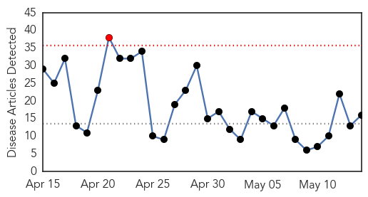
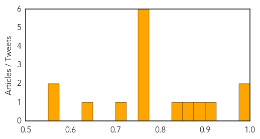
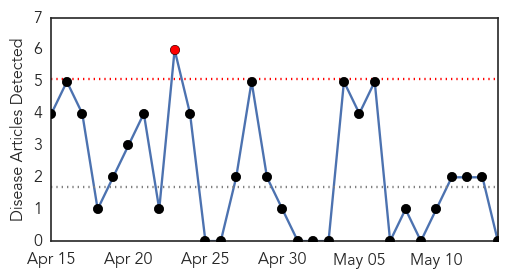

Influenza
30-Day Web Trend
1 alerts, 0 warnings

30-Day Twitter Trend
0 alerts, 0 warnings
Article Locations
Article Confidences
Top Articles:
- 0.999
- Ohio resident dies from H1N1v ‘swine flu’
- 0.983
- UPDATE 1-Nebraska declares state of emergency in bird flu outbreak
- 0.908
- Scientists crack memory code for flu-killing 'assassin' cells in quest for one-shot flu 'jab' for life
- 0.884
- Avian flu threatens backyard chickens in Indiana
- 0.862
- USDA Tests Rodents For Bird Flu; 2 More Cases Reported
- 0.849
- Yankton Press & Dakotan: Community
- 0.751
- May 14, 2015 Archives
- 0.751
- May 13, 2015 Archives
- 0.751
- May 13, 2015 Archives
- 0.751
- May 13, 2015 Archives
- 0.751
- May 13, 2015 Archives
- 0.751
- May 13, 2015 Archives
- 0.713
- Avian flu casts long shadow over Swift, Kandiyohi counties
- 0.643
- NDA working on avian influenza in the state : The Banner-Press
- 0.567
- Timeline of Bird Flu Outbreak
- 0.559
- Egg Industry Center calls for avian flu research
Top Tweets:
-
No tweets found for May 14, 2015
Pertussis
30-Day Web Trend
1 alerts, 0 warnings

30-Day Twitter Trend
0 alerts, 0 warnings

Article Locations

Article Confidences

Top Articles:
-
No articles found for May 14, 2015
Top Tweets:
-
No tweets found for May 14, 2015